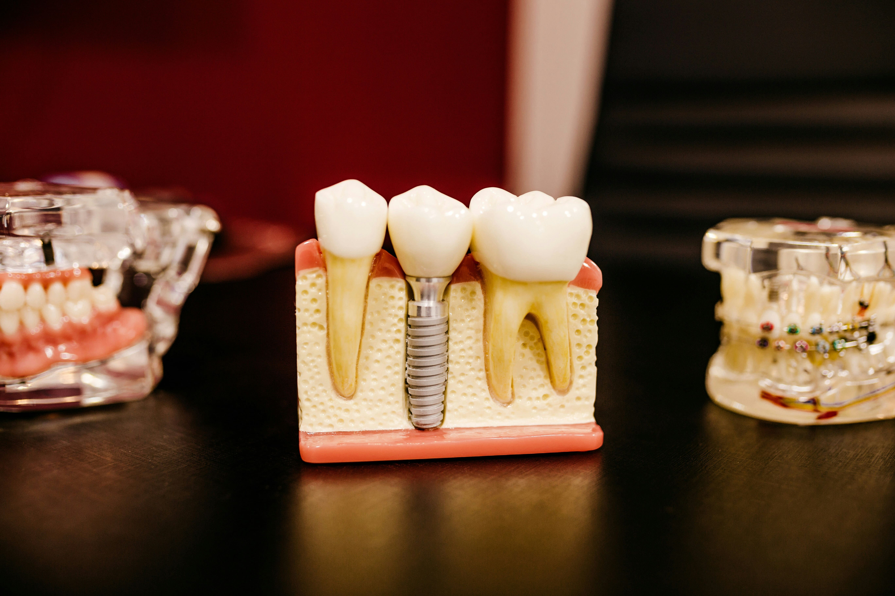

クリニック紹介

痛みの少ないやさしい治療

お口の健康を守る予防歯科

清潔で最新の設備
みなさま、こんにちは。
「さわやか歯科クリニック」院長の松本 貴子です。
当院は、小さなお子さまからご年配の方まで、安心して通える歯科クリニックを目指しています。歯医者に苦手意識を持たれる方にも、やさしく丁寧な治療を提供し、リラックスできる環境を整えると共に、痛みを抑えた治療やわかりやすい説明を心がけ、不安なく通える診療を大切にしています。
また、歯の健康は全身の健康にもつながるため、治療だけでなく予防歯科にも力を入れています。定期検診やクリーニングを通して、みなさまの大切な歯を守り続けていきます。
地域のみなさまにとって、「ここなら安心して通える」と思っていただけるクリニックを目指し、スタッフ一同、努力してまいります。どうぞよろしくお願いいたします。

アクセス
| 住所 | 〒105-0001 東京都港区虎ノ門1丁目3-1 東京メトロ虎ノ門駅より直結・徒歩1分 |
|---|---|
| 駐車場 | 駐車場はないので、近隣のコインパーキングをご利用ください |
| 診療時間 | 午前9:30-13:00 午後14:00-18:30 ※水・日休診 ※土曜日は午前のみ |
地図
お気軽にご予約・お問い合わせください。
患者さんの不安を和らげ、笑顔で通えることを大切にし、最新の設備とやさしい診療で家族みんなの健康な歯を守れるようサポートしていきます。
TEL：000-0000-0000